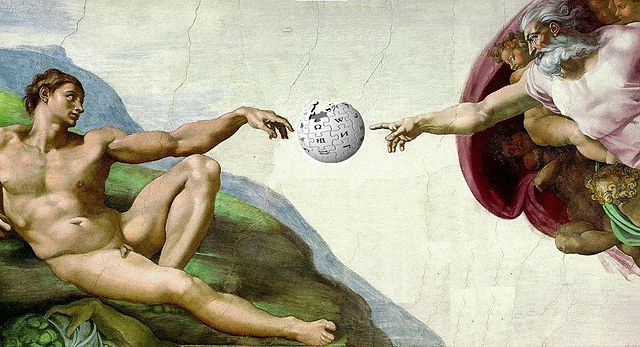

Editing Wikipedia
Date: 20160302 Reading time: 5 minutes. Add to PocketWhy you should do it, why it's good to do it and why it's fun to do it.
 Source: Wikimedia Commons, by Robertolyra.
{kind=link}
Wikipedia is struggling to attract new editors/contributors. And indeed, if you want to start, you'll be greeted by unfamiliar citation tags, obscure template names, talk pages, meta pages and what not. However, if you eventually get through this, it's very rewarding.
It keeps Wikipedia relevant
If everyone would stop editing Wikipedia, it would die off pretty quickly. And that would be a shame. One may not like the direction Wikipedia is going, but that's maybe the best reason to get involved in it even. Almost everyone using Wikipedia (and that is almost anyone) doesn't realize how amazing it is. On the web, dominated by huge (American) corporations, one non-profit service sticks out: Wikipedia. In China, Baidu's 'encyclopedia' dominates. It often doesn't have references, it's heavily censored, and all-in-all pretty unclear where the information comes from. What would happen if Wikipedia faded into obscurity? Google or Facebook would probably come up with an 'alternative'. They might even try to keep it unbiased and make it reliable. But of course their goals are different. Eye-candy and fancy design will be added. Mobile users will be able to edit with ease. Googlepedia/Facebookpedia content will be licenced to commercial parties.
In other words, all controversial content will be removed to keep the public and commercial parties happy, less references will be needed, or paid staff will add the references, and editing the encyclopedia will be done by a bored teenager on his morning commute. The people who need reliable and uncensored content will have to buy it or find everything by searching Google Scholar or Scopus.
Alexa top sites March 2016
- Google.com
- Facebook.com
- YouTube.com
- Baidu.com
- Yahoo.com
- Amazon.com
- Wikipedia.org
It's unlimited thesis-writing training
Contributing to Wikipedia is much like writing a thesis. Choose a subject, do (literature) research, and write a scientifically sound report. On Wikipedia, a good article is created similarly. You stumble upon some article that interests you but isn't up to standard, or maybe some topic you like doesn't even exist yet. Then you search for reliable sources to get an idea what there is to write about. Everything has to be cited, and the Wikipedia cite tags are verys similar to BibTex, should you use it.
You learn to work with different opinions
Everyone has experience with group work in real life of course, and maybe you spend time on some online forums as well. Wikipedia discussions are different from both though. Most active Wikipedia editors are at least more civil than other online discussion partners. Which makes it possible to hold a real debate about content. If you make a controversial edit, you'll be forced to be a bit introspective and maybe change your wording next time. Discussing the content makes you more critical. Don't believe everything you read immediately, be it from Wikipedia or anywhere else. Different articles are written with different writing styles, different subjects can be viewed from very different viewpoints (even though Wikipedia is supposed to be unbiased and neutral).
Uploading media to Commons
All images on Wikipedia are from Wikimedia Commons.
"With over 30 million uploaded files, (as of January 2016), it is the largest free "images-only" repository." source
As stated, all images are 'free', free to use, or 'public domain'. Often news websites use media from Commons to illustrate a story with no photographer on site yet. So it's not just Wikipedia that benefits from good images on Commons. The more good 'public domain' images there are, the more chance that there is one for a subject you're interested it. Everyone (except for professional photographers) benefits. Thanks to Commons and other sources of public domain images, it's possible to find great images that can be used for free. You do need to add attribution usually, which is the least you can do for the creator.
Random nice image I found on Commons. Source: Wikimedia Commons, by Livioandronico2013.Related: editing Openstreetmap
I hope you also have heard about Openstreetmap. If not, do pay attention to it. It's the 'Wikipedia for maps', but note that the organization is not related to Wikipedia. And as far as you can compare them, Openstreetmap is qualitatively better than Wikipedia. The maps are more detailed than Google Maps, they are usually up-to-date within days and it's a very reliable resource for maps. Maybe it's because mapping is a lot less controversial than writing an encyclopedia.
Besides using their website directly, there are several mobile apps that use their maps, allowing offline navigation and offline viewing of entire countries. Lately I've seen their maps being used by news websites and other commercial parties too, which probably has to do with Google Maps significant licensing fees. A community-run project that can compete with the most popular commercial digital mapping service is a huge feat, and confirms the quality of Openstreetmap.
Contributing to Openstreetmap is thus also a thankful hobby. Personally I haven't done so yet, it's more technical than just writing some cited encyclopedic text, but it must be satisfying to navigate with a map you've partially created yourself.
What I don't like about editing Wikipedia
Now, don't expect editing Wikipedia to be solely filled with joy and happiness. Some things are just frustrating. The citation system is one of those things. It's not used anywhere else, there are no good tools to convert other citations to it, and it requires a lot of labels.
At first glance it is the same as BibTex. Copy pasting BibTex citations (which can be created with a nice GUI tool like Jabref) to Wikipedia doesn't work however as the citiation templates have different names, and some stuff like {accolades} around full names are displayed by Wikipedia, but not in BibTex references. Demotivating referencing good sources is the last thing Wikipedia needs, and it would be good if they would build a tool to generate the citation code from URLs, DOI numbers and Google Books.
Some tools exist already, but not nearly enough to cover everything:
- Wikipedia citation tool for DOI, Google Books and The New York Times
- Tool for generating various reference types (but you still have to input every parameter by hand)
There is not even a mandatory way to cite content, with various templates existing, and often no templates used. You can also just use APA style for example and put it between the reference tags (see below).
Wikipedia:
<ref name="Einstein1905">
{{cite journal
|last1=Einstein
|first1=A.
|title=Über die von der molekularkinetischen Theorie der Wärme geforderte Bewegung von in ruhenden Flüssigkeiten suspendierten Teilchen
|journal=Annalen der Physik
|volume=322
|issue=8
|year=1905
|pages=549–560
|issn=00033804
|doi=10.1002/andp.19053220806
}}
</ref>
BibTex:
\cite{Einstein1905}
@article{Einstein1905,
doi = {10.1002/andp.19053220806},
url = {http://dx.doi.org/10.1002/andp.19053220806},
year = {1905},
publisher = {Wiley-Blackwell},
volume = {322},
number = {8},
pages = {549--560},
author = {A. Einstein},
title = {\"{U}ber die von der molekularkinetischen Theorie der W\"{a}rme geforderte Bewegung von in ruhenden Fl\"{u}ssigkeiten suspendierten Teilchen},
journal = {Ann. Phys.}
}
APA style on Wikipedia:
<ref name="Einstein1905">
Einstein, A. (1905). Über die von der molekularkinetischen Theorie der Wärme geforderte Bewegung von in ruhenden Flüssigkeiten suspendierten Teilchen. Annalen der physik, 322(8), 549-560.
</ref>
And now?
Just browse Wikipedia, surely you'll eventually find something that you know more about. But first, start with editing out typos, move on to lay-out issues, write a few referenced sentences, start writing alineas and sections and surely you'll be ready for your first article soon. Before you know it you might even be writing an article on a lake in Kazakhstan, a disused railway line in Belgium or a new car brand in China.
Or start here